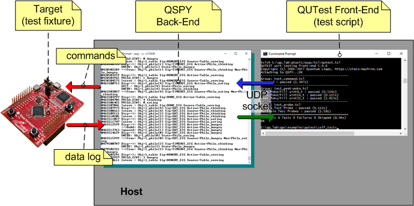
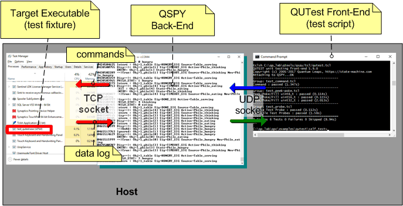

About QUTest™
QUTest™ (pronounced "cutest") is a unit testing harness (a.k.a. unit testing framework), which is specifically designed for deeply embedded systems, but also supports unit testing of embedded code on host computers ("dual targeting"). QUTest™ is the fundamental tooling for Test-Driven Development (TDD) of QP/C/C++ applications, which is a highly recommended best-practice.
- Note
- Even though QUTest™ has been primarily designed for testing of event-driven systems, it can also be used to test any embedded C or C++ code. To demonstrate this capability, QUTest™ comes with a few examples from the conventional Unity testing framework, which among others demonstrates such techniques as using test doubles and mocks with QUTest™.
How does it work?
In a nutshell, working with QUTest™ is similar to "debugging with printf" (or sprintf or similar), where you instrument the code to output information about its execution. You then run the code with a controlled set of inputs, and examine the produced output from the printfs to determine whether the code under test operates correctly. The main differences from using printfs are: (1) the much more efficient QP/Spy output mechanism is used instead and (2) both generating the inputs and checking of the test outputs are automated.
The process of testing embedded code with QUTest™ involves the following components:
- The Target, which runs an instrumented test fixture code, whose job is to exercise your Code Under Test (CUT). Please note that a test fixture only exercises the CUT and reports the results to the host using QP/Spy, but the test fixture does not check if the CUT operates "correctly".
- Note
- Of course, the test fixture is written in the same programming language as the CUT (C or C++) and it links statically with the CUT. Several examples of test fixtures are explained in the QUTest Tutorial. The details of test fixtures are described in QUTest Fixture Reference.
- The QSPY "back-end" application running on the host, which receives the tracing data from the Target and also opens a communication channel for the QUTest "front-end".
- The QUTest "front-end" also running on the host that executes test scripts. The test scripts (written in Python) drive the tests and check the QSPY output against the expectations ("test-assertions").
- Note
- Several examples of test scripts are explained in the QUTest Tutorial. The details of test scripts are described in QUTest Script Reference.

The general QUTest™ structure just described corresponds to running tests on an embedded Target. But QUTest™ can also execute tests on the host computer. In that case (shown in the figure below), the test fixture is a host executable that communicates with the QSPY host application via a TCP/IP socket. In this case all QUTest™ components execute on the host computer.

QUTest with Host Executable
What's Special about QUTest™?
Unlike other existing unit testing harnesses for embedded systems (e.g., Unity or CppUTest) QUTest™ is not based on xUnit, which was originally designed to run tests on host computers. Instead, QUTest™ is geared towards unit testing of deeply embedded systems. Here is a list of QUTest™ unique features, specifically designed for this purpose:
- QUTest™ separates execution of the CUT (Code Under Test) from checking of the "test assertions". The embedded target is concerned only with running a test fixture that exercises the CUT and produces the QP/Spy™ trace, but it does not check the "test assertions". Checking the "test assertions" against the expectations is performed on the host computer by means of test scripts.
- The QUTest™ approach is more intuitive for embedded developers, because it is conceptually like automated "debugging by printf" that most embedded developers use extensively. As it turns out, this approach also simplifies the development of all sorts of test doubles, including mocks, without breaking encapsulation of the CUT.
- QUTest™ is a unique test harness on the embedded market that supports scripting. QUTest test scripts run on the Host, which skips compiling and uploading the code to the Target and thus shortens the TDD micro-cycle.
- Note
- QUTest™ supports test scripts written in Python (3.3+).
- QUTest™ supports resetting the Target for each individual test, if needed. This goes far beyond providing test
setup() and teardown() functions that other test fixtures offer (and of course QUTest supports as well). Clean reset of the Target avoids erroneous tests that implicitly rely on side effects from previously executed code. This is particularly important for embedded systems and for state machines, so that each test can start from a known reset condition.
- QUTest™ supports testing Design by Contract (assertions in C or C++, not to be confused with "test assertions") in the CUT. This is a carefully designed, unique feature of QUTest not available in other test harnesses. A successful test of DbC might actually mean breaking an assertion in the Target code.
- QUTest™ test fixtures that run on the Target do not require dynamic memory allocation (
malloc()/free() in C or new/delete in C++). This means that you don't need to commit any of your precious embedded RAM to the heap (you can set the heap size to zero) and you don't need to link the heap management code. Avoiding dynamic memory allocation is one of the best practices of real-time embedded programming, which you don't need to compromise to run QUTest.
- QUTest™ test fixtures that run on the Target do not require non-local jumps (
setjmp()()/longjmp() in C or throw/catch in C++), which are needed by other test harnesses to discontinue failing tests. QUTest™ test fixtures do not need to discontinue failing tests, because they don't check "testing assertions", so a test fixture does not "know" if it is failing or passing. Should a test fixture crash on the Target, it simply waits for the target reset commanded by a test script.
- QUTest™ test fixtures can be based on the actual application code. For example, you can reuse the same
main() function in a test fixture and in your final application. This means that you can either grow your test fixture into a final application through TDD, or you can more easily add unit tests to an existing application.
- Note
- Even though QUTest™ is particularly suitable for running tests on deeply embedded targets, it also fully supports running the same tests on your host computer (Windows, Linux, and MacOS are supported). In fact, running the tests as much as possible on the host and thus avoiding the target-hardware bottleneck is the highly recommended best-practice of embedded TDD. QUTest™ supports fully-automated unit testing, both on the embedded target and on the host computer.
Installation & Use